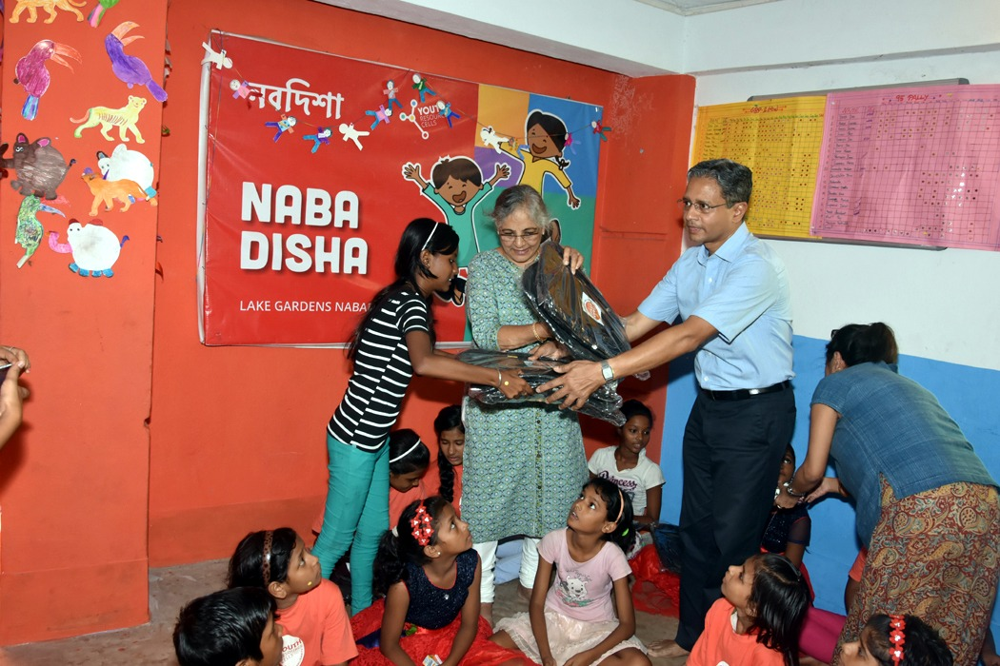
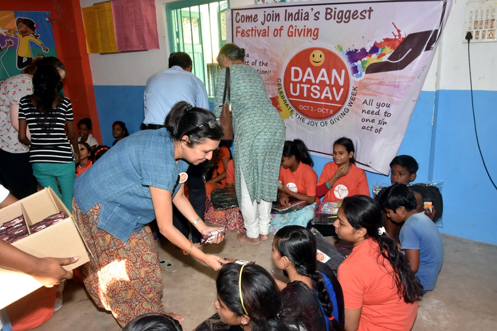
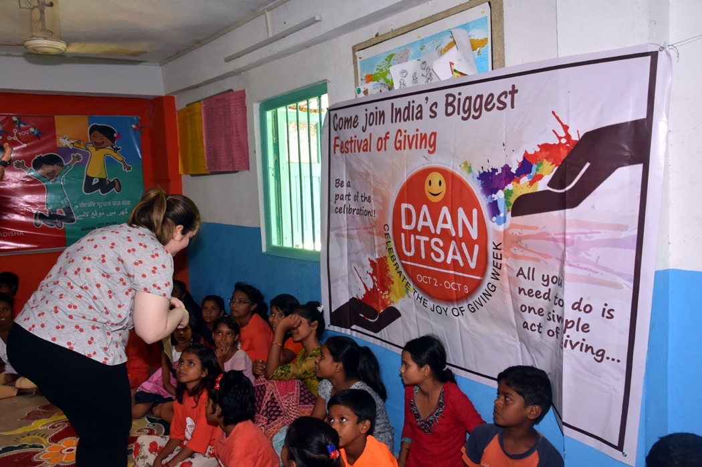
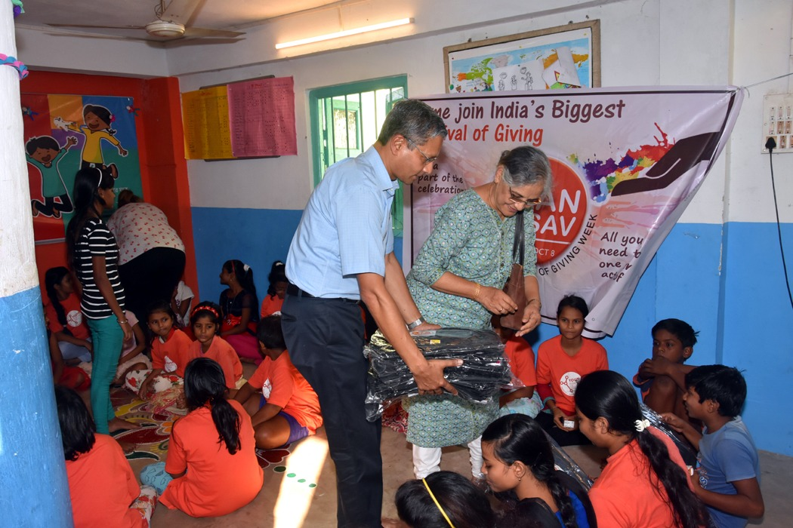
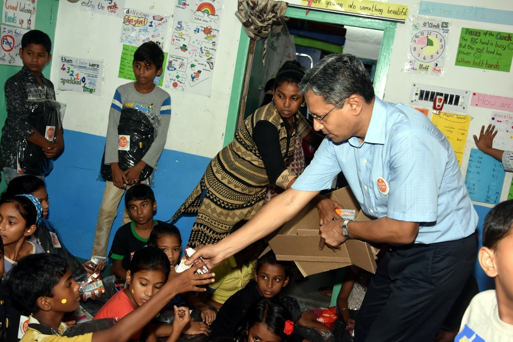
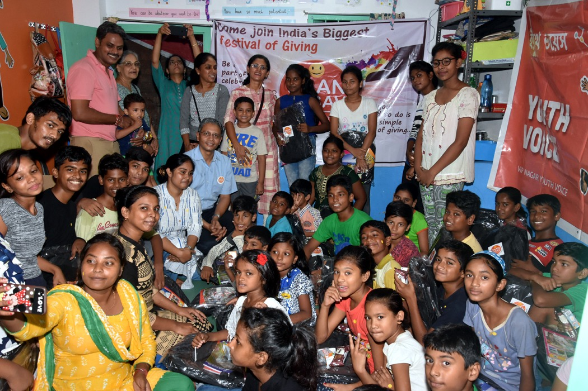
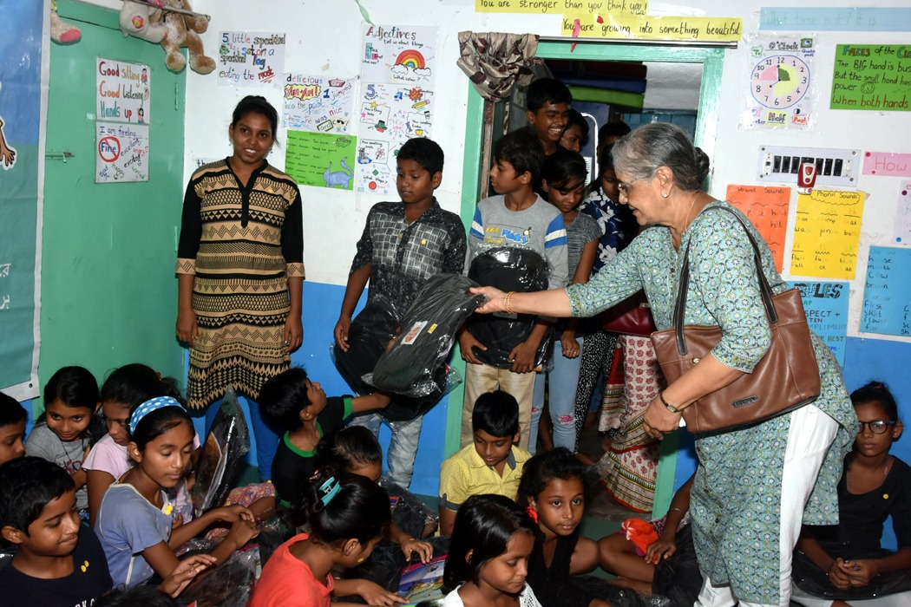
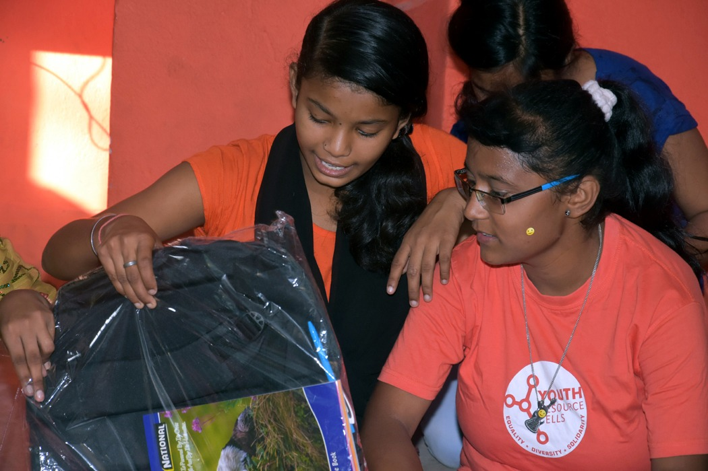
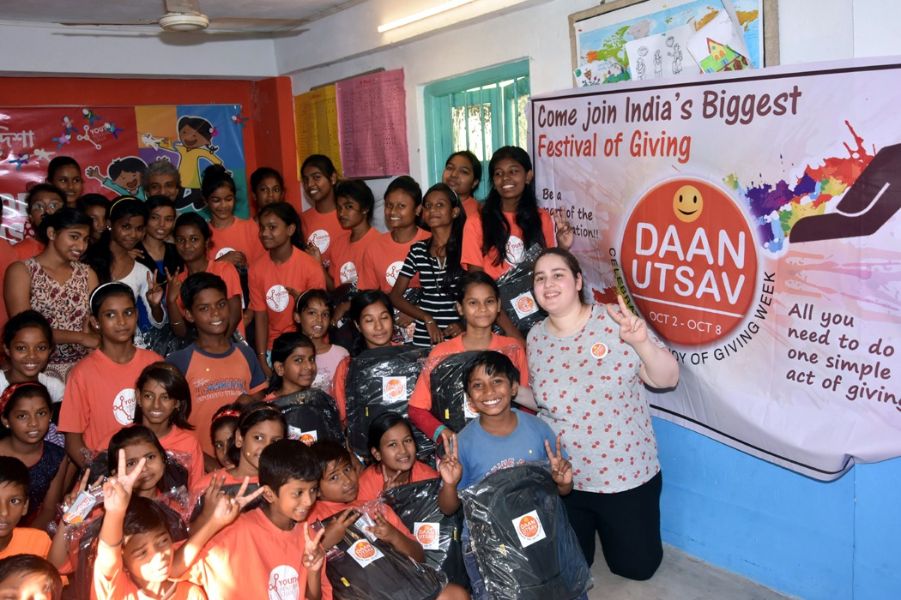
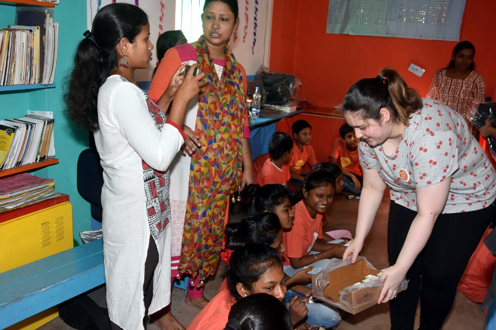

Posted at Date: October 4, 2018
Photo by : Sandip Dutta
Kolkata gears up for Daan Utsav--the Joy of
Giving

The 10th Daan Utsav will be celebrated in Kolkata, with a bouquet of “Giving” events for the underprivileged, from 2-8 October 2018. The events during the “Joy of Giving Week” will include: The “Back to School” initiative providing 1,500 children, living in slums, with school bags, exercise books, pens and crayons. Students of Anando, a school for poor children, will themselves collect old clothes and distribute these among the destitute on Sealdah station platforms. More than 1,200 poor children, including 100 with special needs, from 22 NGOs, will be taken to Nicco Park for free rides and lunch. Collection of clothes, blankets, hygiene kits and toys have been made for the Bengal Network for People Living With AIDS which will distribute these among AIDS infected people. Usthi Uttar Bishnupur Bharat Tirtha will encourage first-generation school-going children to buy food for patients at the local hospital. They will also clean three of their villages, aided by their elders.

Priyamvada Birla Aravind Eye Hospital will organize an eye camp at Liluah where patients suffering from cataract will be offered treatment at nominal cost. Nearly 700 children will visit the MP Birla Planetarium for a show and fun & games thereafter.
Various prominent schools in Kolkata will celebrate Daan Utsav by collecting provisions for local NGO’s, visiting old-age homes and cleaning their surroundings. Corporates have made pledges to adopt an old-age home, a school in rural Bengal and the Sunderbans. Many individuals are doing their own acts of giving across the city.
· Daan Utsav Samman, a unique initiative by Birla Corporation Limited, recognizes significant ‘Giving’ initiatives organized by schools, housing societies and organizations in and around Kolkata, in the areas of Health & Hygiene, Education, Environment and Social Development. More than 35 schools and 90 housing societies took part in last year’s celebration of Daan Utsav. A distinguished panel of judges selected eight schools and six housing societies for the award. This year, one can visit www.sammanawards.com and share their ‘Giving’ initiatives to qualify for this recognition.
Daan Utsav is a festival, not another organization like an NGO. It belongs to the people, just like Diwali, Christmas, Eid, World Elders’ Day or Mother's Day. A large number of socially conscious citizens volunteer their time across the country to encourage more and more people to celebrate the “Festival of Giving”.
In celebrating the Utsav, some people donate money, some their time, some materials and some just love. One can celebrate Daan Utsav the way one wants. Individuals do small acts of giving across the country. Corporate Houses organize volunteering and ‘Giving’ activities, with their employees and customers, NGOs organize awareness or fund-raising events, housing societies visit or invite orphanages or elderly homes or throw a party for their drivers, maids and watchmen. Schools and colleges encourage students to volunteer and many individuals, including celebrities, do their little bit in whatever way they can.
Daan Utsav is about celebrating the ability to do something for others. It is also about recognising that there is great joy to be found in giving of oneself, bringing a smile on the face of another, or helping someone overcome a difficult situation, even if only momentarily. Daan Utsav is not an organization with a templated hierarchy run by a few or by any, but a celebration of the “Utsav of Daan”, promoted by hundreds of volunteers across India.
Over the past 10 years, Daan Utsav has encouraged and inspired millions across the country. We have the rickshaw drivers in Badamba, Odisha, who ferried elders from their village to the local medical camp at no cost, the vegetable vendors in Chennai who donated bags of vegetables to local NGOs, or the young, visually impaired boy from Mumbai, who volunteered his skill to paint the Mumbai Central station. These are just a few among thousands of stories. Each one of us is capable of this and more.







